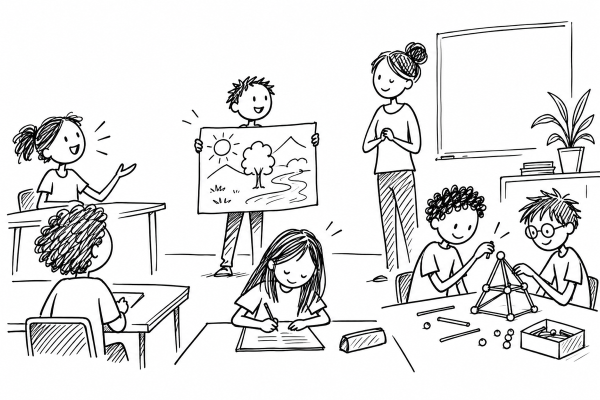

Sonstige Leistungen
Mehr als das Unterrichtsgespräch.

In der Sek I gehören nach § 6 Abs. 2 APO-S I mündliche und praktische Leistungen sowie gelegentliche kurze schriftliche Übungen dazu. Mitarbeit im Unterricht zählt ebenso wie die übrigen Leistungen. In der Oberstufe umfasst „Sonstige Mitarbeit“ nach § 15 APO-GOSt schriftliche, mündliche und praktische Leistungen außerhalb der dort ausgenommenen Klausuren und Facharbeiten.
- Mögliche Nachweise: fachliche Beiträge, Präsentationen, Protokolle, Produkte aus Projekten und individuell erkennbare Beiträge in Gruppenarbeiten.
- Qualität, Entwicklung und Kontinuität beobachten; bloße Häufigkeit von Wortmeldungen bildet Leistung nicht vollständig ab.
- Schriftliche Übungen sind ein möglicher Nachweis. Die Folienangaben zu 30/45 Minuten, sechs Unterrichtsstunden und einem Ankündigungsgebot sind aus § 6 APO-S I bzw. § 15 APO-GOSt nicht als allgemeine landesweite Regel ableitbar.
Bei Hausaufgaben und Arbeitsorganisation zählt die fachlich erkennbare Leistung. Für Sek I sind die Vorgaben des Hausaufgabenerlasses und des jeweiligen Kernlehrplans zu beachten; bloßes Materialdabeihaben belegt keine fachliche Kompetenz.
Rechtsquellen: APO-S I § 6 Abs. 2 ↗ · APO-GOSt § 15 ↗
Seminarunterlagen: Zusammenfassung · Aufgabenfolien
Seminarunterlagen: Zusammenfassung · Aufgabenfolien
Drei Fragen zu Beispielen
Klicke eine Karte an und vergleiche deinen Ansatz mit der Musterantwort.